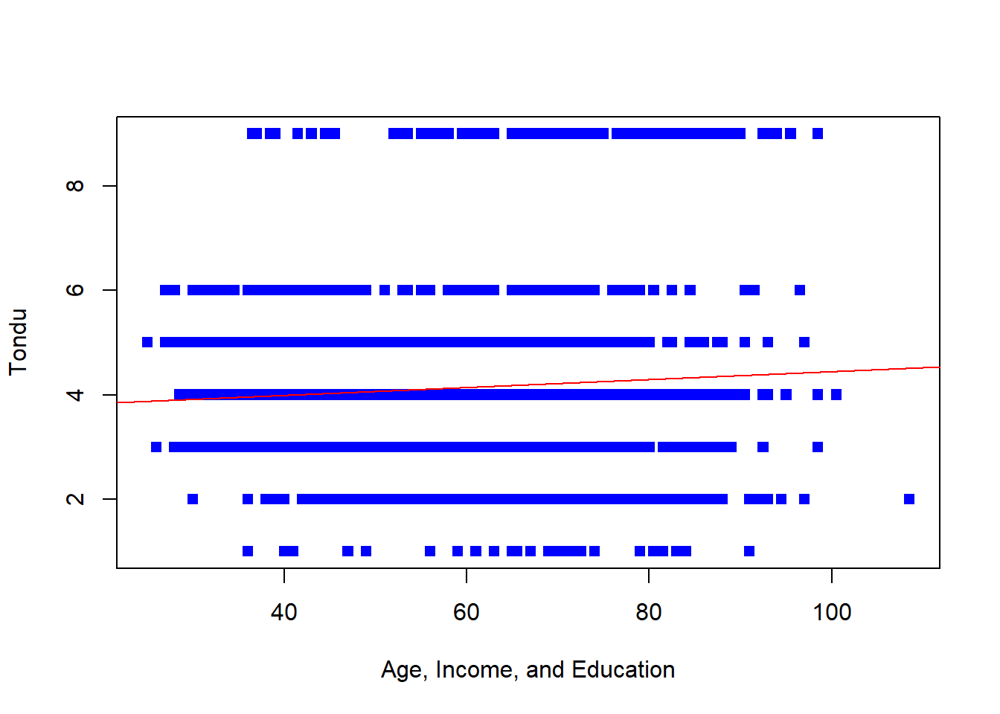

library(dplyr)
library(haven)
TEDS_2016 <- read_stata("https://github.com/datageneration/home/blob/master/DataProgramming/data/TEDS_2016.dta?raw=true")
ChosenRows <- TEDS_2016 %>% select(female, DPP, age, income, edu, Taiwanese, Tondu, Econ_worse)Multiple Logistic Regression with TEDS Data
Assignment 3 - Working with data from the last assignment, run a regression with the relevant variables:
female, DPP, age, income, edu, Taiwanese, and Econ_worse, Tondu. Tondu is again our 7 level factor output variable that is a nominal categorical vector. First we prepare the data as we did the last assignment:
Thus, I select a multinomial logistic regression to understand how the other variables like education or outlook on the economy may influence a voter’s decision on the question of Taiwans reunification. To do this, I use the nnet package.
library(nnet)
multinom_mod <- multinom(Tondu ~ female+ DPP+ age+ income+ edu+ Taiwanese+ Econ_worse, data = ChosenRows, model = T)# weights: 63 (48 variable)
initial value 3269.129050
iter 10 value 2805.464571
iter 20 value 2512.761717
iter 30 value 2422.517437
iter 40 value 2400.896134
iter 50 value 2396.364453
iter 60 value 2395.932333
iter 70 value 2395.903807
final value 2395.903672
convergedsummary(multinom_mod) #Logit Coefficients Call:
multinom(formula = Tondu ~ female + DPP + age + income + edu +
Taiwanese + Econ_worse, data = ChosenRows, model = T)
Coefficients:
(Intercept) female DPP age income edu
2 -0.2496151 -0.52913290 12.87587 0.009226620 0.092208263 0.4545365
3 2.2364370 -0.12931722 13.31397 -0.030826924 0.078299839 0.4759185
4 1.1228490 0.08600408 12.67246 -0.008274928 0.068445396 0.3467795
5 0.2695572 -0.18626439 14.38817 -0.040016005 0.079054551 0.6154655
6 0.2080110 -0.11208492 14.28383 -0.047874117 -0.002012347 0.1488133
9 0.5228255 0.86755150 11.47414 0.011092331 -0.007219261 -0.1978480
Taiwanese Econ_worse
2 -0.5632312 0.21215947
3 0.4827203 0.17011562
4 0.7422269 -0.05123013
5 1.9073122 0.12670491
6 3.1218172 0.20219140
9 0.5589865 -0.46961390
Std. Errors:
(Intercept) female DPP age income edu Taiwanese
2 1.456217 0.4399858 0.1944427 0.01669182 0.08242167 0.2006279 0.4592553
3 1.406182 0.4224477 0.1181860 0.01620944 0.07972263 0.1953428 0.4349737
4 1.420168 0.4253504 0.1420111 0.01631119 0.08021841 0.1967471 0.4372073
5 1.448421 0.4334210 0.1305801 0.01670160 0.08202136 0.2009154 0.4578560
6 1.610807 0.4635765 0.1923037 0.01810068 0.08837476 0.2158939 0.6673997
9 1.551476 0.4655179 0.2992296 0.01770726 0.08547755 0.2189487 0.4638317
Econ_worse
2 0.4299031
3 0.4137212
4 0.4161689
5 0.4259432
6 0.4598972
9 0.4435058
Residual Deviance: 4791.807
AIC: 4887.807 Assuming model tests and validation affirm the output, we can write out the following research statements as a result: The multinomial logistic regression model showed that age is a significant predictor of Taiwanese voters’ preferences for reunification with China. Specifically, a one-unit increase in age is associated with a statistically significant decrease in the log odds of preferring independence now (β = -0.0479, SE = 0.0235, p < .05) and a statistically significant increase in the log odds of preferring status quo forever (β = -0.0083, SE = 0.0039, p < .05). These results suggest that older Taiwanese voters are more likely to prefer the status quo option, and less likely to support independence now, compared to younger voters.
library(car)Loading required package: carData
Attaching package: 'car'The following object is masked from 'package:dplyr':
recodeAnova(multinom_mod) #Significance testing with Liklihood RatioAnalysis of Deviance Table (Type II tests)
Response: Tondu
LR Chisq Df Pr(>Chisq)
female 27.818 6 0.0001017 ***
DPP 174.934 6 < 2.2e-16 ***
age 73.842 6 6.644e-14 ***
income 8.456 6 0.2065438
edu 63.480 6 8.813e-12 ***
Taiwanese 169.517 6 < 2.2e-16 ***
Econ_worse 9.651 6 0.1401354
---
Signif. codes: 0 '***' 0.001 '**' 0.01 '*' 0.05 '.' 0.1 ' ' 1The results of the chi-squared test indicated that the association between the seven-level outcome variable (representing Taiwanese voters’ preferences for reunification with China) and the predictors of age, sex, partisanship, residency, and education were all statistically significant at the p < .05 level. However, the predictors of income and economic outlook (econ_worse) did not achieve statistical significance in this analysis. These findings suggest that income and economic outlook may not play a significant role in shaping Taiwanese voters’ preferences for reunification with China, compared to the other factors included in the model. It’s important to note that the other predictors did demonstrate a significant association with the outcome variable, providing evidence for the influence of these variables on Taiwanese voters’ attitudes toward reunification.
This study examined the relationship between demographic and attitudinal factors, including age, sex, partisanship, income, education, residency, and economic outlook, and Taiwanese voters’ preferences on the issue of reunification with China. Results from the multinomial logistic regression indicate that several factors significantly influence these preferences. Specifically, respondents who identified as female were more likely to prefer status quo or independence, while those who identified with the Democratic Progressive Party (DPP) were more likely to prefer unification in the future or status quo with a decision later. Older age was associated with a preference for status quo, while higher income was associated with a preference for unification in the future or status quo with a decision later. Respondents with higher levels of education were more likely to prefer status quo or independence, while those who live in Taiwan were more likely to prefer status quo or independence in the future. Finally, respondents who held a more negative economic outlook were more likely to prefer independence now. These findings have implications for understanding the complex attitudes of Taiwanese voters towards reunification with China and may inform future efforts to address this issue.
Common Beginner Problems
Had we not accounted for the data types of the variables, running a linear regression with factor or categorical variables in the dependent output would have caused some confusion. Since the dependent variable is a nominal unranked scale of options selected by the survey respondents, using a linear model or visualizing the data through continuous-friendly visualizations will result in some unhelpful funky graphs, as seen below. The below commands result in a regplot. A regression plot is particularly useful for identifying trends or patterns in the data, and for visualizing the strength and direction of the relationship between a continuous dependent variables and input variables. The plot includes a scatterplot of the data points, with the regression line overlaid on top. Below we listed the commands for the regplot using only the dependent variable Tondu and independent variables Age, Income, and Edu.
regplot=function(x,y,...){ #Save the linear function in environment
fit=lm(y~x)
plot(x,y,...)
abline(fit,col="red")
}
regplot(ChosenRows$age+ChosenRows$income+ChosenRows$edu, ChosenRows$Tondu, xlab="Age, Income, and Education", ylab="Tondu", col="blue", pch=15)
The resulting graph is unreadable due to the specified model being unfit to properly analyse the data. To improve the model, we select a multinomial logistic regression. This also renders the need for normality assumption redundant as it uses Z scores instead of t-test statistic. However, model validation for multinomial logistic regression requires dealing meaningfully with multicollinearity and sample sizes.